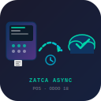

Eliminate ZATCA chain_index collisions in POS by moving EDI submission to an async cron.
High POS traffic causes SerializationFailure due to chain_index locking in the same transaction.
Generate invoices instantly, then process ZATCA EDI sequentially via background cron.
No lock collisions, reliable chain_index order, and stable POS performance.